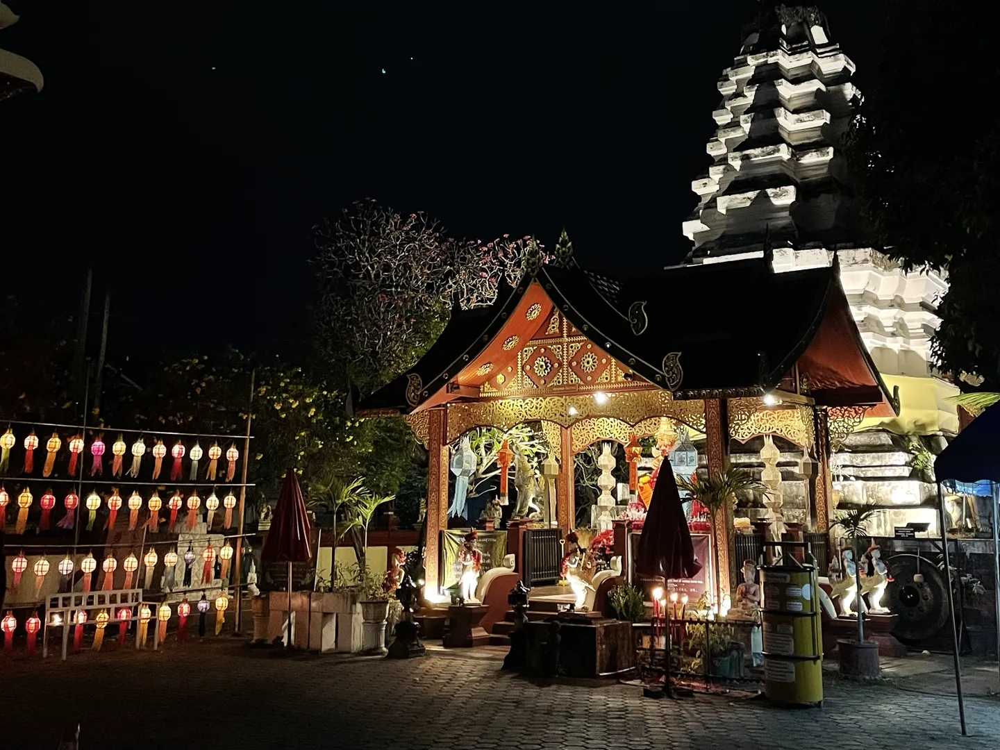
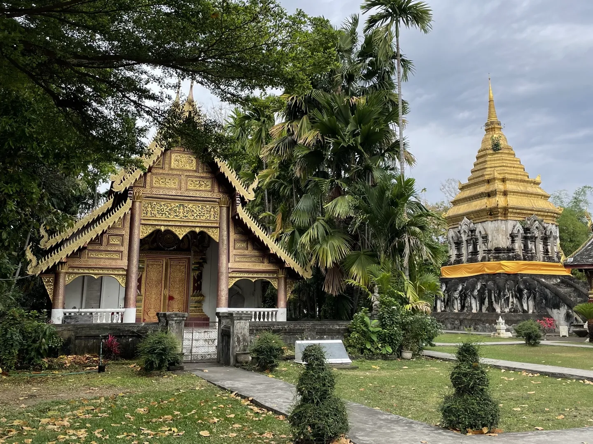
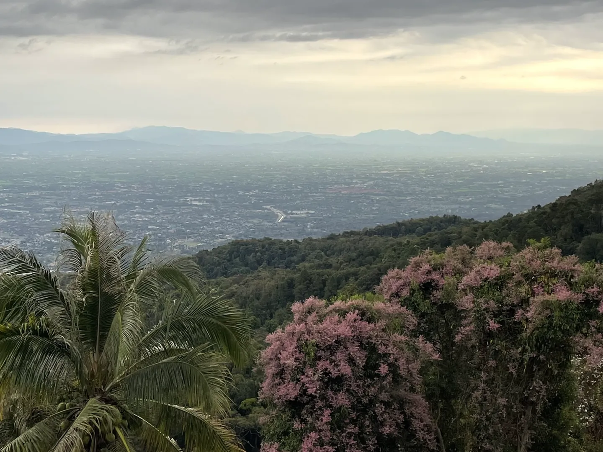
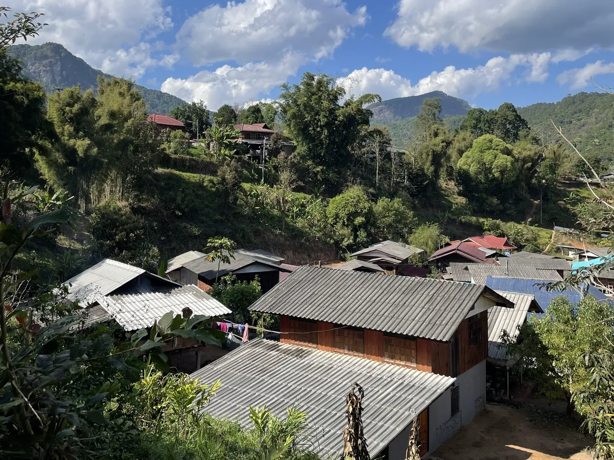

Chiang Mai, Thailand

Chiang Mai is one of the easiest places in Southeast Asia to settle into for a week. It has enough cafes, markets, temples, and mountain day trips to keep things interesting without feeling overwhelming. I used it as a base for hiking, cafe hopping, and exploring Northern Thai culture while keeping costs low.
The city itself is very walkable around the Old City, but the best parts of Chiang Mai are outside the centre. Day trips into the mountains, waterfalls, and national parks are what make this place worth staying longer than a couple of nights.
I averaged around 1,500 THB per day staying in hostels, eating local food, and using shared transport or scooters. It is easy to spend more in Nimman cafes and nightlife areas, but budget travel here is still straightforward.
- Burning season usually runs from February to April. Air quality can get very bad during this period.
- Most tourists can enter Thailand visa-free for short stays, but always check current entry rules before flying.
- Grab works well in Chiang Mai and is usually cheaper than negotiating with tuk-tuks.
- Temples require covered shoulders and shorts below the knee.
- ATM withdrawal fees are high in Thailand. Withdraw larger amounts less often.
- Mountain areas around Chiang Mai are cooler than the city, especially early mornings from November to January.
- Old City temples include Wat Phra Singh, Wat Chedi Luang, and Wat Chiang Man. Most are active religious sites, so mornings are quieter and more respectful than afternoons. Entry fees are usually 20–50 THB.
- Sunday Walking Street Market runs along Ratchadamnoen Road inside the Old City from around 4 PM, stretching almost the full length of the street between Tha Phae Gate and Wat Phra Singh. One of the better spots for cheap street food, local crafts, live music, and people watching.
- Nimman Road and One Nimman are the modern side of Chiang Mai with cafes, coworking spaces, bars, and boutiques. Noticeably more expensive than the Old City but has some of the best coffee in Northern Thailand.
- Chiang Mai cafes like Akha Ama Coffee, Graph Cafe, and Ristr8to are worth visiting even if you are not a big coffee drinker. Most open early and work well for slow mornings or remote work sessions.
- Doi Suthep Temple is best visited early in the morning before haze and tour buses arrive. Mountain views over Chiang Mai are much clearer earlier in the day.
- Northern Thai cooking classes usually include a local market visit before teaching dishes like khao soi, green curry, pad thai, and sticky rice desserts.
- Ethical elephant sanctuaries such as Elephant Nature Park and Chang Chill focus on feeding and observing elephants rather than riding experiences.
- Muay Thai fights at Chiang Mai Boxing Stadium or Kalare Boxing Stadium are touristy but still a fun local night activity.
- Night markets include Chiang Mai Night Bazaar, Ploen Ruedee Night Market, and the Saturday Walking Street near Wua Lai Road.
- Bua Thong Waterfalls — also called the Sticky Waterfalls — have a grippy limestone surface that lets you climb directly up sections of the waterfall.
- Mae Kampong village is a quieter mountain village east of Chiang Mai, popular for cafes, cool weather, and short forest walks.

- Flights from Bangkok take around 1 hour 15 minutes. Budget airlines regularly sell tickets from 900–2,000 THB.
- Overnight sleeper trains from Bangkok take 11–13 hours. Second-class sleeper tickets usually cost 900–1,500 THB.
- Long-distance buses from Bangkok take 9–11 hours and cost roughly 600–900 THB.
- Chiang Mai International Airport is about 15 minutes from the Old City by Grab. Expect to pay around 120–180 THB.
- Walking works well inside the Old City.
- Songthaews are the cheapest local transport option. Most short trips cost 30–50 THB.
- Grab is reliable and avoids haggling. Short rides around the city are usually 70–150 THB.
- Scooter rental costs around 200–350 THB per day excluding fuel. An international driving permit is technically required.
- Shared minivans are common for day trips to national parks and nearby towns.
- Old City hostels suit first-time visitors and budget travellers. Dorm beds usually cost 250–500 THB per night.
- Nimman has modern guesthouses and apartments close to cafes and nightlife. Private rooms usually start around 700–1,500 THB.
- Riverside guesthouses are quieter and suited for slower trips. Budget around 600–1,200 THB for simple private rooms.

- Khao soi is the must-try Northern Thai dish. Expect to pay 60–120 THB at local restaurants.
- Night markets are the cheapest places to eat. Meals often cost 50–100 THB.
- Local coffee culture is strong because of Northern Thailand's coffee farms. Cafe drinks usually cost 60–120 THB.
- Try sai ua Northern Thai sausage and mango sticky rice from local stalls.

- Doi Suthep Monk's Trail — 5 km return, moderate, no guide required, free. A shaded forest walk leading up to Wat Pha Lat and on to Doi Suthep.
- Doi Inthanon National Park trails — short walks from 2–6 km, easy to moderate, no guide required. Park entry around 300 THB. Thailand's highest peak is here and temperatures can feel surprisingly cold early in the morning.
- Kew Mae Pan Nature Trail — roughly 3 km loop, moderate, local guide required during open season. Guide fee around 200 THB per group.
- Pai — ~3 hours north by minivan (~150–200 THB each way). Pai Canyon is a 1 km ridge walk with optional scrambling, plus hot springs, waterfalls, and riverside cafes. Most travellers stay 2–3 nights rather than day-trip it.
- Chiang Dao — ~1.5 hours north by minivan (~80–120 THB each way). Tham Chiang Dao is a guided ~1 km lamp-lit cave walk (~40 THB entry, ~100 THB lamp guide). Karst mountain and forest trails outside town for fitter visitors.
- Lampang — ~1.5 hours south by train (~50 THB). Walkable Lanna old town, wooden shophouses, horse-drawn carriages, and Wat Phra That Lampang Luang ~20 km out. Suits a slow cultural day trip.
| Item | THB |
|---|---|
| Hostel dorm | 350 |
| Local meals | 250 |
| Coffee and drinks | 150 |
| Transport | 250 |
| Attractions and temple fees | 300 |
| Scooter fuel or Grab rides | 200 |
| Daily total | 1,500 |